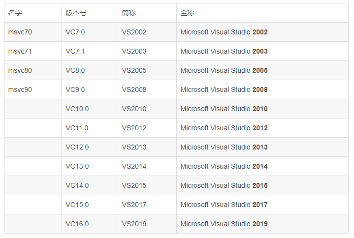

IDE
IDEA
Ctrl + Y 删除光标所在行 或 删除选中的行 （必备） Ctrl + X 剪切光标所在行 或 剪切选择内容 Ctrl+Shift+上下键 上下移动代码
VisualStudio
Alt+O .h和.cpp切换

Typroa
参考网页 标题 1~6 开头#的个数表示，空格+文字。标题有1~6个级别，#表示开始，按换行键结束
对应的快捷键： ctrl + 1/2/3/4/5/6
Git
-
查看远程分支 $ git branch -a
-
查看本地分支 $ git branch
-
切换分支 $ git checkout -b v0.9rc1 origin/v0.9rc1
-
切换回master分支
$ git checkout master
5.删除添加到缓存的文件
一种是 git rm --cached "文件路径"，不删除物理文件，仅将该文件从缓存中删除；
从master上拉取一个新分支： git branch 查看当前分支，显示为master就行了 git checkout -b xxx 根据master分支切一个xxx分支出来 git branch 查看当前分支，显示为xxx分支就可以 git push -u origin xxx 将xxx分支推到远程上，因为远程上没有这个新的xxx分支，所以要加-u。第一次将新分支提交到远程上时需要加-u
提交到当前开发分支： git branch 查看当前分支 git status 修改和添加的文件是红色的 git add . 将所有的文件推到暂存区 git status 此时修改和添加的文件是绿色的 git commit -m "" 将暂存区的代码推到本地仓库 git status 此时工作目录是干净的 git push origin xxx 将本地仓库xxx推到远程xxx，远程上有这个分支时可以不用写origin xxx
合并到master分支： git checkout master 切换到master分支 git branch 查看当前分支
git pull origin master 保险起见先拉一下master分支上的代码
git merge xxx 将xxx合并到master分支 git push 将master分支代码推到远程，因为远程上有master分支，所以可以不用加origin master
git如何撤销上一次commit操作：
第一种情况，如果还没有push，只是在本地commit：git reset --hard
第二种情况，如果已经push：git revert
强制将远程上代码覆盖本地：
git fetch --all
git reset --hard origin/master
git pull
git status中文乱码
git config --global core.quotepath false
git 生成ssh锁
1. 设置名称 git config --global user.name "yangjianliang"
2. 设置邮箱 git config --global user.email "526861348@qq.com"
3. 生成密钥 ssh-keygen -t rsa -C "526861348@qq.com"，按3次回车
4. 查看公钥 cat ~/.ssh/id_rsa.pub
git其他补充
1、初始化版本库
git init
2、查看配置
git config -l
3、添加配置（只是标识，和gitee账号没关系）
git config --global user.name 'king'
git config --global user.email '222@qq.com'
查看配置
git config --list
4、本地文件配置路径
.git/config
当前用户目录/.gitconfig
git安装目录/etc/gitconfig
5、添加到缓存
Git add
. 把新增的文件、修改的文件都加入缓存库
-A 新增的文件、修改的文件、删除的文件都加入缓存库
6、提交到本地库
git commmit -m '备注信息'
git commit -am '备注信息' -一步提交到本地库
git commit -a -m '提交'
7、github使用
创建版本库
本地git与github建立连接 https/ssh (https：会弹出账号密码、ssh：公钥和私钥)
git remote add <shortname> <url>
https：添加远程库：git remote add XXX https://XXX.git
查看详细信息：git remote -v
文件推送：git push -u XXX master
ssh：git remote add en-ssh XXX.git
文件推送：git push -u XXX master
clone来的仓库，默认都有一个源origin
git remote show origin
移除远程仓库：git remote rm origin
8、忽略和排除
目录下建立一个.gitignore文件（可以有多个，影响范围当前文件及子文件）
要在命令行中创建，window不支持创建
touch .gitignore
9、克隆：将整个版本的信息都拉取下来了
git clone git地址 本地文件夹名
git clone xxxxxx.git enjoy-git
10、ssh
ssh-kengen -t rsa -C XXX@qq.com 在 c/users/administrator/.ssh/id_rsa
11、将远程主机中的最新内容拉到本地
git fetch en-https master 不进行合并（只放到了仓库里）
git merge origin/master
git pull en-https master 自动合并
如果本地有数据，pull会报错，要加--allow-unrelated-histories
12、分支
git checkout master (切换到主分支)
13、rebase
14、查看分支 git branch *是选中的分支
king
*master
rebasing
15、日志
git log
git log --oneline
git log --oneline --graph
16、Git工作流程
从远程仓库克隆代码到本地仓库
从本地仓库中checkout代码然后进行修改
提交前先提交到缓存区
提交到本地仓库
push到远程仓库
17、查看git状态
git status
git status -s
18、删除文件
git rm xxx
git commit -m 'XXXX'
如果是手动删除，要先加到暂存区
19、远程抓取
20、远程推送(把本地的master推送到远程master)
git push origin master
====分支========
列出所有本地分支
git branch
列出所有远程分支
git branch -r
列出所有本地和远程分支
git branch -a
创建分支
git branch 分支名
切换分支
git checkout 分支名
推送分支
git push origin 分支名
分支合并（在要合并的分支中执行，比如从开发分支合并到主分支，就要切换到主分支）
git merge dev
当文件冲突时，我们要编辑冲突的文件，然后用git add来标识冲突已解决
git add XX
git commit -am
删除分支（要先切换到其他分支）
git branch -d b1(如果删除的分支进行了一些开发，此时执行删除是不能成功的，如果要强制删除，将-d修改成-D)
删除远程分支的命令：
git push origin -d branchName
===git====使用====
1、切换到待修复的版本
2、创建修复分支
3、切换修复分支
4、修改问题
5、切换待修复分支
6、merge
7、push
8、切换工作分支
===git标签=======
列出已有的标签
git tag
查看标签
git show 【tag】
创建标签
git tag 【tagName】
远程推送标签
git push prigin v0.1
检出标签
git checkout -b [branch] [tag]
删除本地标签
git tag -d [tag]
删除远程tag
git push origin :refs/tags/[tag]
gitignore文件配置
# no .a files
*.a
# 不需要忽略的文件
!lib.a
# 忽略文件夹
/TODO
#指定文件夹下的
build/
#指定文件类型
doc/*.txt
#指定文件夹下的文件
doc/**/*.pdf
查看远程库的信息
$ git remote -v
origin https://gitee.com/wtcgsys/git_demo.git (fetch)
origin https://gitee.com/wtcgsys/git_demo.git (push)
git--合作开发中使用技巧
- 创建分支other,切换到other分支
git branch other
git checkout other
- 分支修改完成后提交
git add ./xxx/
git commit -m"xxx"
- other分支完成，切换回master
git checkout master
此时，master分支上并没有other的文件，因为分支还没有合并
- 合并分支
git merge other
- 删除other分支
git branch -d other
VSCode
-
括号匹配 Windows Ctrl + Shift+\
-
块注释:先选中需要注释的块，然后按
c
Alt + Shift + A
-
删除指定行 ctrl+shift+k
MkDocs
wt-wiki
cd wt-wiki
mkdocs serve
- 在docs中添加对应的文章
- 在mkdocs.yml中添加对应的连接
- push到git上
- 部署站点到git上 mkdocs gh-deploy
- 将Mardown文件转为静态HTML网页文件
- 将所有的静态HTML网页文件都推送到远程仓库的gh-pages分支
- 指定端口 mkdocs serve --dev-addr=0.0.0.0:8001
python
pip安装时会下载失败，报错信息：
During handling of the above exception, another exception occurred:
这是由于频繁访问网站或请求造成的，可以通过更换国内源的方法来解决此问题。示例如下：
pip install scrapy -i http://pypi.douban.com/simple --trusted-host pypi.douban.com
其中-i指向要更换的国内源。 –trusted-host也是有必要的，否则会因为douban.com不被信任而报错。
最后附上pip国内的一些镜像：
中国科技大学 https://pypi.mirrors.ustc.edu.cn/simple/ 清华大学 https://pypi.tuna.tsinghua.edu.cn/simple/ 阿里云 http://mirrors.aliyun.com/pypi/simple/ 中国科学技术大学 http://pypi.mirrors.ustc.edu.cn/simple/ 豆瓣(douban) http://pypi.douban.com/simple/
PyCharm
-
Ctrl + Shift + I 三个键，就会弹出信息框，显示它们的定义
-
我们可以 额外的添加目录，作为 Pycharm 的模块搜索路径。
方法就是 右键点击 要添加的目录，在弹出的菜单中 选择 Mark Directory as -> Source Root
- 代码注释
Python中注释代码是在前面加 #
有时，我们需用注释掉大量的代码，这时候，就可以选中这些代码，按 Ctrl + 斜杠/ 就可以注释他们了。不需要我们一个个的在每行前面加 #号
如果我们后来又要取消注释，只需再次 按 Ctrl + 斜杠/ 就可以取消注释了。
GitLab
ubuntu安装gitlab：https://www.cnblogs.com/shawWey/p/12020637.html